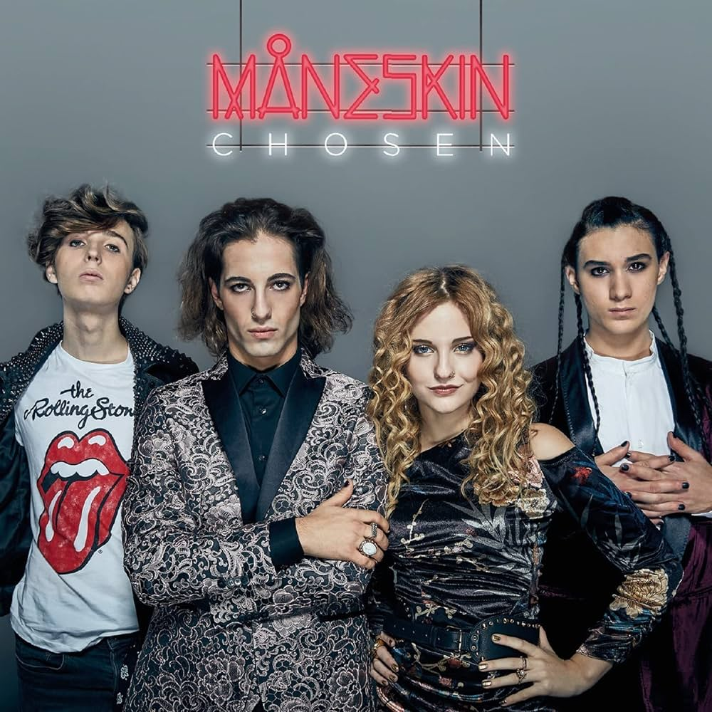

Chosen
Chosen is the debut extended play by Italian rock band Måneskin. It was released on 8 December 2017 and peaked at number 3 on the Italian Albums Chart. The EP includes the single with the same name and another original song ("Recovery"), both in English, and various cover songs performed during the eleventh season of X Factor Italia.[3] The EP was certified platinum and in addition its tracks collected two platinum and four gold certifications by FIMI. Outside Italy and post-Eurovision success, the band's rock cover of "Beggin'" by The Four Seasons became the most popular song from the record.
Il Ballo Della Vita
Il ballo della vita ('The dance of life') is the debut studio album by Italian pop rock band Måneskin. It was released on 26 October 2018. The album peaked at number one on the Italian Albums Chart, managed to reach Top 20 on European music charts, and received a triple platinum certification by FIMI. The album includes the hit singles "Morirò da re", "Torna a casa", "Fear for Nobody", "L'altra dimensione" and "Le parole lontane". Like in the previous EP Chosen, Il ballo della vita is a modern Italian pop rock record with influences from funk, reggae and ska. In an The Upcoming interview, the band cited Led Zeppelin, Arctic Monkeys, Harry Styles, Red Hot Chili Peppers and Bruno Mars as inspirations for the album. The album's title is meaning a "celebration of youth, of freedom". The central figure of the album's lyrics is the fictional muse "Marlena", a "woman who represents beauty and the message we want to communicate: a message of freedom of choice, of attitude, of style to which we have tried to give a face, a name and a voice". Another protagonist is a man who wants to be with her until the very end. According to Damiano David, she is also a "personification of the fear of not being able to be oneself. Man is security, believing in oneself, like a father or an older brother, and he takes this woman into an objectively uncomfortable situation to bring her to a better version: not changing her, but making her accept herself, her aspirations". Five out of twelve songs in the album contain lyrics in English: "New Song", "Sh*t Blvd", single "Fear for Nobody", "Are You Ready?" and "Close to the Top".
Teatro D'ira Vol.I
Teatro d'ira: Vol. I is the second studio album by Italian rock band Måneskin. It was released on 19 March 2021 through RCA and Sony. It includes the singles "Vent'anni" and the Sanremo and Eurovision-winning "Zitti e buoni", as well as the songs "I Wanna Be Your Slave" and "Coraline". Following Måneskin's victory at the Eurovision Song Contest 2021 with "Zitti e buoni", the album started appearing on weekly charts across Europe. It peaked at number one on the Italian albums chart, and was certified quintuple platinum by FIMI. It also reached number one on the Finnish, Lithuanian, and Swedish album charts and reached the top ten of the charts in fourteen other territories. It has since received three other gold music. certifications in three other countries. According to the band, the project's title "Teatro d'ira" ("theatre of wrath") and meaning are of "cathartic anger aimed at oppressions and oppressors, which leads to venting and rebelling against everything that makes you feel wrong and which, as a result, leads to a rebirth and change. We wanted to place this very powerful force in a context, that of the theater, which in the common imagination is perceived as elegant and calm. We like this antithesis: a contrast that lives when the curtain opens and, instead of a show or a ballet, we find ourselves catapulted into this explosion of energy. Theatre is a metaphor to represent art, the place where this powerful impulse generates something artistic and positive.
RUSH!
Rush! is the third studio album by Italian rock band Måneskin, released on 20 January 2023 through Epic Records. It was preceded by the singles "Mammamia", "Supermodel", "The Loneliest", and "Gossip", with "Baby Said" following on 3 March 2023. In support of the album and its predecessor Teatro d'ira: Vol. I (2021), the band is embarking on the Loud Kids Tour and the Rush! World Tour throughout 2022 and 2023. Måneskin recorded "probably 50" songs for the album, which they recorded in part in Los Angeles with producer Max Martin. The band revealed that they had been working on their "debut international album" with Martin and the MXM and Wolf Cousins team, including Savan Kotecha and Mattman & Robin, extensively after meeting them the previous year. The single "Supermodel", which was worked on with Martin and Rami Yacoub, was premiered live during the final of the Eurovision Song Contest 2022. The band later teased a song on the album called "Gasoline", written in support of Ukraine after the 2022 Russian invasion, also made by the team.
RUSH! (ARE U COMING?)
Rush! is the third studio album by Italian rock band Måneskin, released on 20 January 2023 through Epic Records. It was preceded by the singles "Mammamia", "Supermodel", "The Loneliest", and "Gossip", with "Baby Said" following on 3 March 2023. In support of the album and its predecessor Teatro d'ira: Vol. I (2021), the band is embarking on the Loud Kids Tour and the Rush! World Tour throughout 2022 and 2023. A reissue titled Rush! (Are U Coming?) was released on 10 November 2023, supported by the single "Honey (Are U Coming?)". They were also influenced during the writing and recording process after listening to Radiohead, with bassist Victoria De Angelis stating that Måneskin had "tried to experiment a bit more with [their] sound. We listened to a lot of Radiohead where they work a lot with pedals." Frontman Damiano David said: "I think that the inspiration we got from Radiohead was to be very focused on creating a very specific world for each song. It's something they do very, very well so we tried to create these amazing atmospheres. They really create an image of what you're listening to, and that gave us inspiration."